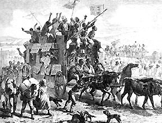
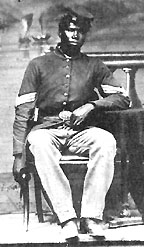
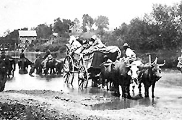
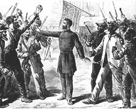
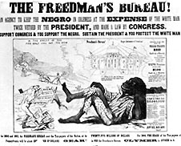

|
The first emancipation of slaves during the Civil War occurred just over a month
after the war started. On May 22, 1861, a force under General Benjamin Butler
invaded eastern Virginia and established a base at Fort Monroe. Within a few
days, many slaves from local plantations had flocked to Fort Monroe. This left
Butler in a tough place. It had been made clear to the commanders of the Union
army that the war was, at the time, being fought solely to return the states to
the Union, not to liberate the slaves. On the other hand, he did not want to
return them. So Butler hit upon a solution. He labeled them contrabands,which
didn't commit to the slaves' freedom, while making clear that they would not be
returned to their owners, since contraband is captured property. The term was so
appealing that it became the official policy of the government and president
Lincoln.
Lincoln and Emancipation
The contraband policy was in effect for slightly more than a year. During
that time, any attempts to go beyond that were quickly overruled by Lincoln. For
example, when General John C. Frémont attempted to free all the slaves under his
control in August of 1861, Lincoln immediately had the order rescinded. As the
Civil War progressed, however, the president gave increasing attention to the
possibility of emancipating the slaves. Lincoln had two issues that concerned
him in regards to emancipation. First, he felt that it was necessary to
demonstrate that Emancipation would not destroy the economic and social fabric
of the nation. Second, the president was concerned with the effect emancipation
|

Freedmen celebrate emancipation
|
would have on the war effort, weakening the morale of the North and
strengthening that of the South. He feared that Northerners would be unwilling
to fight a war of emancipation, while Southern resolve would be strengthened by
the belief that they were fighting to save slavery. The caution Lincoln
exercised has led some historians to conclude that he was lukewarm on his
humanitarian commitment to emancipation. In fact, Lincoln worked on laying the
groundwork for a move against slavery for most of the war. In March of 1862, he
had presented Congress with a plan for gradual, compensated emancipation of
slaves held in the North. In summer of that year, Lincoln convinced the Congress
to include a passage in the Second Confiscation Act that allowed for seizure of
Confederate slaves. And in September of 1862, only eighteen months after the war
began, Lincoln issued the preliminary Emancipation Proclamation, threatening to
end slavery in the states of the Confederacy if they failed to return to the
Union by January 1863.
In his December State of the Union address, which came between the issuance
of the preliminary and final Emancipation proclamations, President Lincoln made
one final push for compensated emancipation of slaves along with colonization,
the relocation of slaves to African soil. There is some dissension among
historians as to what his motives were for doing so. Some argue that Lincoln was
firmly committed to colonization and that his actions were one last desperate
attempt at getting the scheme adopted. This interpretation seems problematic,
however, for Lincoln was a shrewd politician. He had seen colonization plans
rejected before, and he certainly knew that his proposal would be rejected. It
appears that his actions can better be explained as a means of demonstrating to
the country that emancipation was the only viable solution to the slavery
problem. In any case, no colonization plan was adopted and no Confederate states
returned to the Union. Lincoln issued the final Emancipation Proclamation on
January 1, 1863, and the Civil War was transformed into a war against
slavery.
While the Emancipation Proclamation radically altered the Union's war goals,
it had little immediate impact on the institution of slavery itself. Most of the
places where slavery existed were part of the Confederacy, and thus were not
subject to orders from Abraham Lincoln. Those places where slavery existed that
were under Lincoln's control were exempted. As such, the most significant effect
that the proclamation had in the lives of African Americans at the time it was
|

An African-American soldier
|
issued was the provision providing for black conscription. Though black soldiers
had been fighting since the beginning of the war as contrabands and in the Union
navy, the proclamation allowed them to be formally incorporated into the Union
army. The move was defended by Lincoln as a military necessity, as a means of
striking at the heart of the Southern economic system and as a way to use all of
the resources possible in prosecuting the war. However, the enlistment of
African American troops also had great symbolic importance, emphasizing the link
between the war and emancipation and allowing African American soldiers to
demonstrate to the country that they were fit to be citizens. The first black
regiment organized under the terms of the Emancipation Proclamation was the 54th
Massachusetts Infantry, which made a celebrated attack on Fort Wagner in July of
1863. Altogether, 180,000 African Americans served in the army and 10,000 served
in the navy; 37,000 died.
At the same time that black troops in the field were fighting for their
citizenship, the Lincoln administration was compelled to demonstrate to the
country that former slaves could work without the impetuses that slavery
provided. Louisiana, which had been wholly conquered by Union forces by the end
of 1862, was to be the first testing ground for Lincoln's experiments with free
African labor. Essentially, the contrabands were forced back onto plantations,
and to keep them there, were paid wages. There were severe limits on their
autonomy, however, so what this amounted to was contract labor. This was done
under the auspices of General Nathaniel P. Banks, who defended the system,
saying that it had restored order to the plantations, kept the contrabands from
being mistreated, and undermined the slave labor system. Some people agreed with
him, including, incredibly, militant abolitionist William Lloyd Garrison. Others
felt that the contrabands were being sold out in the interest of resuming cotton
production.
Other experiments with free African American labor took place at The Sea
Islands of South Carolina. Several different plans were tried there, for a
variety of reasons. First, all the white residents had fled. Second, a large
group of missionaries and philanthropists had come to help out. Third, the land,
while not great, was very good for growing crops. In any case, the first
experiment with free labor there was run by Edward Phillbrick. Phillbrick wanted
|

Black refugees
|
to prove that the slave system would still work and be profitable with free
labor. To that end, he ran his plantation just as it had been under slavery, the
only difference being that the contrabands were paid wages. Phillbrick made a
handsome profit, but his experiment was not definitive, because he was operating
under unusually favorable conditions, and underpaying the contrabands.
Another plan tried at the Sea Islands was proposed by General Rufus Saxton.
The government set aside 16,000 acres of land for contrabands to purchase. The
prices were low, but still too high for most contrabands because slaves
generally did not have much opportunity to save any money. Instead, they just
took the land, which worked until the government decided to sell the land to
other parties. The contrabands were evicted, and they fled to join the thousands
of other contrabands and fugitives who were following Sherman's armies on their
march through Georgia. Sherman issued Field Order #15, opening all the unsold
abandoned land on the coast between Charleston and Florida for settlement by
former slaves. The order granted 40 acre plots for each family with the
provision that they were to be granted possessory title. 60,000 blacks moved
onto the land, with the hopes that they would be allowed to stay. They were not,
and the provisions of Field Order #15 and similar edicts became a symbol after
the Civil War of broken promises made to African Americans; "Forty Acres and a
Mule".
Lincoln's Reconstruction Plan
At about the same time that Lincoln issued the Emancipation Proclamation, the
occupation of Southern lands made it necessary for the administration to begin
to come up with some sort of reconstruction policy, a clear process by which
states would be removed from the control of the Confederate government and be
put under the control of the federal government. Congress began to debate the
issue in 1862, but had reached no agreements by the end of 1863, by which time
there were large amounts of Southern territory under federal control. So Lincoln
decided to take action, and in December of 1863 issued a general proclamation of
amnesty and Reconstruction. Lincoln's Reconstruction plan came to be known as
the 10% plan. It required that Southerners wishing to rejoin the Union swear an
oath of future allegiance to the U.S. When 10% of the number of people who had
voted in the elections of 1860 had done so, they were to constitute an
electorate that would create a new state government.
Lincoln was always clear that he was open to compromise on the issue of
Reconstruction. However, in the absence of any other alternative, he also had to
work to implement his plan. In 1863, he chose Louisiana as the first state where
his plan would be tried. Lincoln placed the state under the control of Nathaniel
P. Banks and together they labored to reconstruct Louisiana and have it
readmitted to the Union. Congress denied readmission, though Lincoln continued
to defend what had been accomplished in Louisiana. In fact, it was the topic of
his final speech, given four days before his death. Lincoln was correct, a lot
had been accomplished; a new state Constitution incorporating abolition of
slavery and education for blacks and had been written and incorporated and a new
legislature had been elected. However, the legislature had balked at giving
blacks the vote, and there was serious conservative and radical opposition to
President Lincoln's Reconstruction plan.
Some of the most serious opposition to Presidential Reconstruction came from
Congress, where many members did not like Lincoln's non-doctrinaire approach. The
Wade-Davis Bill, passed in July of 1864, was much more stringent than Lincoln's
plan. It required that 50% take the oath of future loyalty for the state to be
readmitted. Further, once the state was readmitted, the only people who could
vote were those who took an ironclad oath, guaranteeing future loyalty and
swearing that they had not assisted the Confederacy in any way. Since most
everyone had assisted the Confederacy, this provision would have essentially
excluded everybody. The bill also ruled out any role for the president and the
military in Reconstruction. Finally, the bill restricted the vote to whites.
Lincoln pocket vetoed the bill, and Wade and Davis issued an angry manifesto
attacking the president and his policies.
Congress also spent considerable time bickering about the problem of what to
do about the slaves that were freed. While the Sea Islands and Louisiana
experiments with free African American labor had some limited success, most
|


Two views of the Freedmen's Bureau. The image on the top
portrays the Bureau in a positive light, with a Bureau agent fairly and calmly
mediating conflicts between white and black Southerners. The image on the bottom
shows an exaggerated, apelike figure allowed to lounge and not do work thanks to
the Bureau.
|
Republicans felt that the government would have to take an active role in
helping the South to make the transition from slave labor to free. Shortly
before adjourning in March of 1865, after nearly two years of debate, Congress
established the Freedmen's Bureau. This marked the first time in American
history that the federal government assumed responsibility for the social
welfare of individuals.
The Freedmen's Bureau was supposed to aid and protect freedmen as they tried
to make their own way, to give them 'a fair chance'. However, the Bureau's
powers to do so were limited by a variety of factors. First, the act creating
the Freedmen's Bureau limited the agency's life to only one year. Though this
was extended several times, it made the Bureau's power tenuous, and constantly
subjected it to the vagaries of the political process. Further, the Bureau was
underfunded. It was considered part of the War Department, and as such had no
budget of its own. The lack of funding was exacerbated by the fact that the
Bureau was not allowed to focus on blacks only, but also had to take care of
white Southern refugees. Finally, the Bureau's actual legal responsibility was
limited to only two concerns; the distribution of land and administering relief
for destitute people. All of these things limited the Freedmen's Bureau's
effectiveness.
Despite these limitations, the Freedmen's Bureau proved to be fairly
successful in the first few years after the war. The Bureau executed its
official functions to the greatest extent possible. It distributed relief,
though more to whites than blacks, as it turned out. It also leased much of the
850,000 acres under its control. The Bureau's most important functions, however,
turned out to be unofficial powers it assumed after going into operation.
Freedmen's Bureau agents established special tribunals so former slaves could
get justice denied them in Southern courts. This didn't always prove effective,
because of the Bureau's limited official powers, and because the whites who ran
the bureau were concerned about offending Southern whites. Nonetheless, it was
an important extension of the Bureau's power, and it proved to be a great
assistance to many blacks who had nowhere else to turn. In addition to these
special tribunals, Bureau agents also mediated disputes about labor contracts
between landlords and their black employees. Though there were many successes in
this area, they were also limited by the Bureau's lack of formal authority. The
Bureau's greatest achievements came in setting up and administering schools. By
1866, the Bureau had founded 740 schools with 1,300 teachers and 90,000
students. By 1870, those numbers had grown to 2,700 schools with 3,300 teachers
and 150,000 students.
While the Freedmen's Bureau enjoyed many successes and played an important
role in the years after the war, at the time that the Civil War ended it was by
no means clear what its role would be or how much it would achieve. And beyond
the vaguely defined act creating the Bureau, Congress had made no decisions as
to how Reconstruction would proceed by the time it adjourned in March of 1865,
not to reconvene until December of that year. Meanwhile, President Lincoln's
plan for Reconstruction had only been mildly successful and had come under a
great deal of criticism. As such, when Lincoln died in April of 1865, there were
no successfully Reconstructed states and there was no clear Reconstruction
policy. The task of finding a balance between the practicality of Lincoln and
the consistency sought by Congress fell to Lincoln's successor, Andrew
Johnson.
Johnson's Reconstruction Plan
When Andrew Johnson took office, the next session of Congress was more than
six months away. As such, Johnson decided to take the initiative and to
reconstruct the South before Congress could get back in session and stop him.

Andrew Johnson
|
President Johnson's Reconstruction plan allowed any adult male who took an oath
of loyalty to vote and hold office, except for former political and military
leaders of the Confederacy and people with holdings exceeding $20,000. The
latter individuals were forced to apply personally to the president for
clemency, which was almost always granted. Johnson also appointed provincial
governors to take charge and supervise the registration of voters, then the
writing of a new constitution abolishing slavery, then the election of new state
governments and Congressional representatives.
Johnson claimed he was following Lincoln's example in taking a conciliatory
position toward the South. However, there were some significant differences
between Lincolnian and Johnsonian Reconstruction. First, Johnson's plan came
after the war. As such, the oath wasn't quite as effective a test of loyalty,
since there was no longer a competing claim on a Southerner's allegiance.
Further, Johnson ignored the specific situations of states, applying his
policies across the board. Finally, Johnson was not the politician Lincoln was:
he paid little attention to screening and molding the electorate, as Lincoln had
done; he was much less flexible than Lincoln when faced with changing
circumstances in the South and when faced with opposition from Congress; and he
was much more conservative than Lincoln.
Andrew Johnson's Reconstruction plan proved to be a failure. He was too
lenient towards the former Confederates, and worried too much about appeasing
former Southerners. Most notably, he insisted that the land of individuals who
had taken the oath be restored. Rather than endear the South to Johnson and
ensure their loyalty, his plan just caused the Southern governments to seize
control from him. Unpardoned people were elected to office, at which point they
immediately pardoned themselves. Prominent Confederates were chosen to represent
the Confederacy in Congress, including Alexander Stephens, who had been the
Confederate vice-president. Nonetheless, Johnson expected that the Congress
would admit the Congressmen elected by the Southern governments, so as to avoid
further turmoil.
Source: Christopher Bates for the History 139A website
|